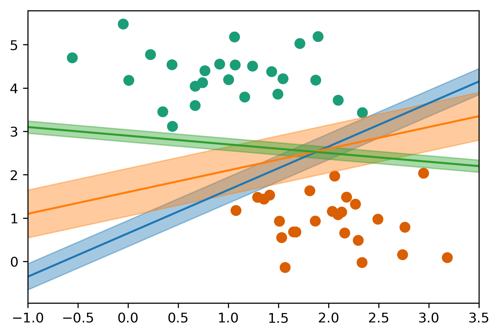
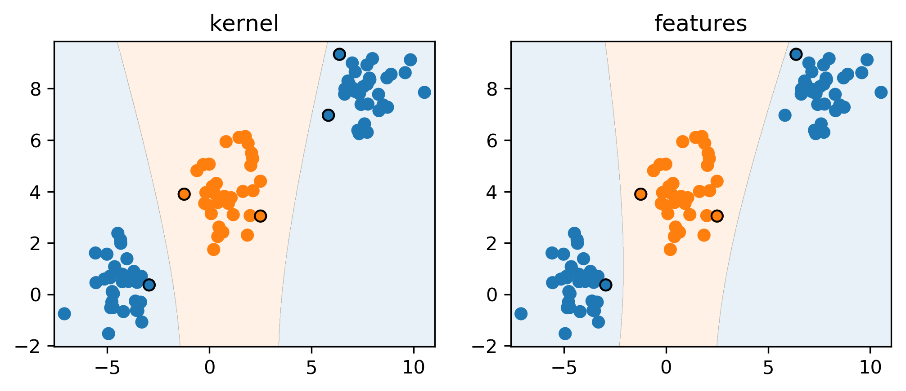
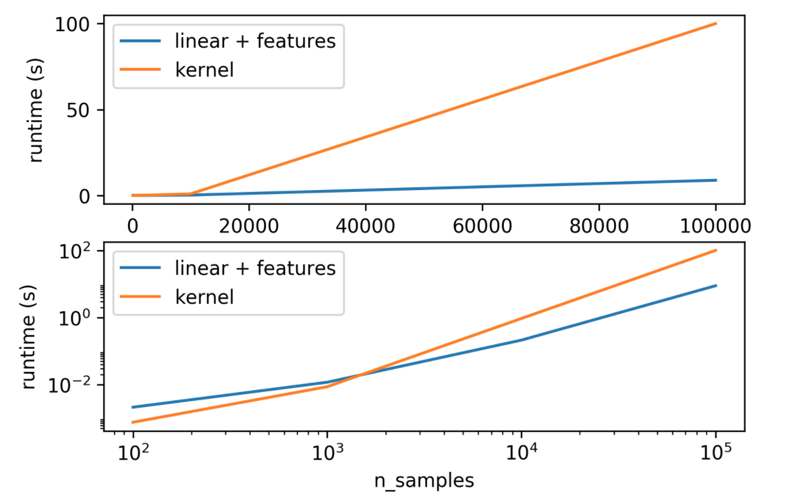
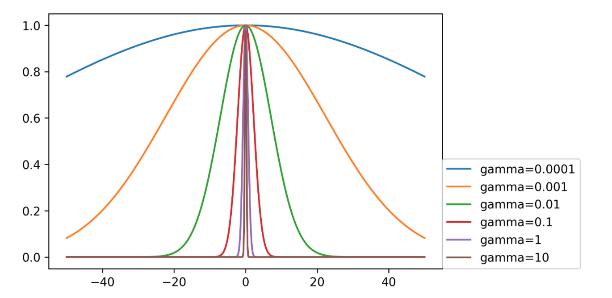
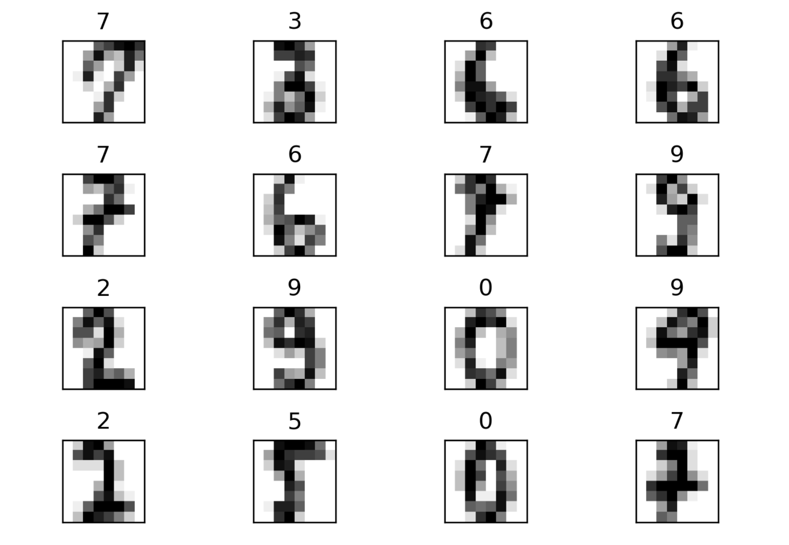
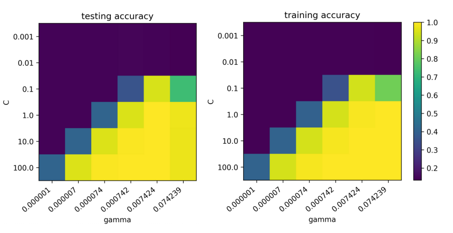
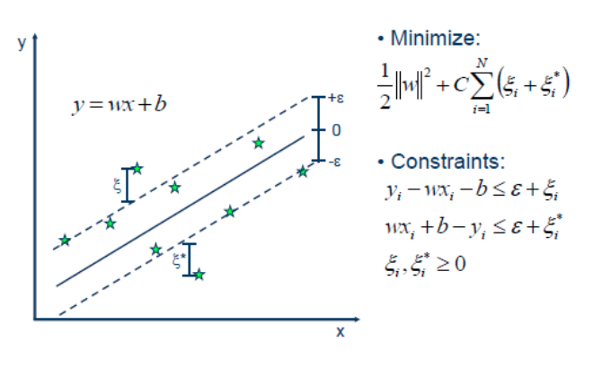
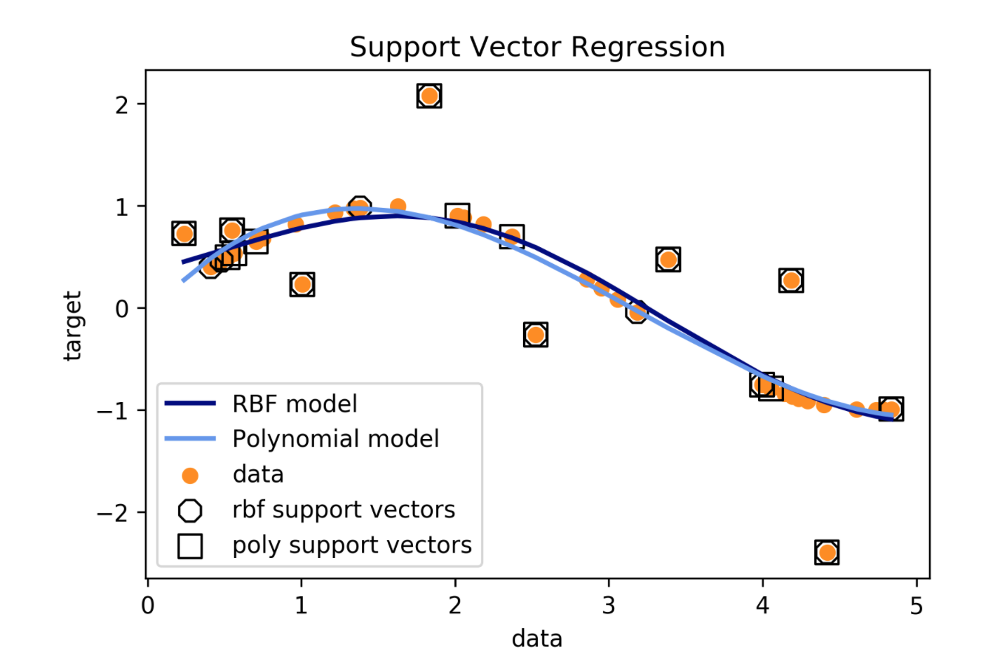

SVM Kernels
10/07/2022
Robert Utterback (based on slides by Andreas Muller)
Nonlinear SVMs
Motivation
- Go from linear models to more powerful nonlinear ones.
- Keep convexity (ease of optimization).
- Generalize the concept of feature engineering.
Reminder on Linear SVM
\[ \minw C \sum_{i=1}^m \max(0, 1 - y^{(i)} (\vec{w}^T\vec{x}^{(i)} + b)) + ||w||^2_2 \] \[ \hat{y} = \text{sign}(\vec{w}^T \vec{x} + b) \]
Max-Margin and Support Vectors

Max-Margin and Support Vectors


Reformulate Linear Models
- Optimization Theory:
\[ \vec{w} = \sum_{i=1}^m \alpha^{(i)} \vec{x}^{(i)} \]
(alpha are dual coefficients. Non-zero for support vectors only)
\[ \hat{y} = \text{sign}(\vec{w}^T \vec{x}) \Longrightarrow \hat{y} = \text{sign}\left(\summ\ai (\xip) \right) \]
\[ \ai \le C\]
Kernels
Introducing Kernels
\[\hat{y} = \text{sign}\left(\summ\ai (\xip)\right) \longrightarrow \\ \hat{y} = \text{sign}\left(\summ \ai \tip \right) \]
\[ \phi(\vec{x}^{(i)})^T \phi( \vec{x}^{(j)}) \longrightarrow k(\xi, \vec{x}^{(j)}) \]
Examples of Kernels
\[k_\text{linear}(\vec{x}, \vec{x}') = \vec{x}^T\vec{x}'\] \[k_\text{poly}(\vec{x}, \vec{x}') = (\vec{x}^T\vec{x}' + c) ^ d\] \[k_\text{rbf}(\vec{x}, \vec{x}') = \exp(\gamma||\vec{x} -\vec{x}'||^2)\] \[k_\text{sigmoid}(\vec{x}, \vec{x}') = \tanh\left(\gamma \vec{x}^T\vec{x}' + r\right)\] \[k_\cap(\vec{x}, \vec{x}')= \sum_{i=1}^p \min(x_i, x'_i)\]
- If \(k\) and \(k'\) are kernels, so are \(k + k'\), \(kk'\), \(ck'\), …
Polynomial Kernel vs Features
\[ k_\text{poly}(\vec{x}, \vec{x}') = (\vec{x}^T\vec{x}' + c) ^ d \]
- Primal vs Dual Optimization
- Explicit polynomials \(\rightarrow\) compute on \(m\cdot p^d\)
- Kernel trick \(\rightarrow\) compute on kernel matrix of shape \(m^2\)
- For a single feature:
\[ (x^2, \sqrt{2}x, 1)^T (x'^2, \sqrt{2}x', 1) = x^2x'^2 + 2xx' + 1 = (xx' + 1)^2 \]
Poly kernels with sklearn
poly = PolynomialFeatures(include_bias=False)
X_poly = poly.fit_transform(X)
print(X.shape, X_poly.shape)
print(poly.get_feature_names())
# ((100, 2), (100, 5))
# ['x0', 'x1', 'x0^2', 'x0 x1', 'x1^2']

Understanding Dual Coefficients
linear_svm.coef_
#array([[0.139, 0.06, -0.201, 0.048, 0.019]])
\[ y = \text{sign}(0.139 x_0 + 0.06 x_1 - 0.201 x_0^2 + 0.048 x_0 x_1 + 0.019 x_1^2) \]
linear_svm.dual_coef_
#array([[-0.03, -0.003, 0.003, 0.03]])
linear_svm.support_
#array([1,26,42,62], dtype=int32)
\[ y = \text{sign}(-0.03 \phi(\mathbf{x}_1)^T \phi(x) - 0.003 \phi(\mathbf{x}_{26})^T \phi(\mathbf{x}) \\ +0.003 \phi(\mathbf{x}_{42})^T \phi(\mathbf{x}) + 0.03 \phi(\mathbf{x}_{62})^T \phi(\mathbf{x})) \]
With Kernel
\[y = \text{sign}\left(\summ\ai k(\xi,\vec{x})\right) \]
poly_svm.dual_coef_
# array([[-0.057, -0. , -0.012, 0.008, 0.062]])
poly_svm.support_
# array([1,26,41,42,62], dtype=int32)
\[ y = \text{sign}(-0.057 (\vec{x}_1^T\vec{x} + 1)^2 -0.012 (\vec{x}_{41}^T \vec{x} + 1)^2 \\ +0.008 (\vec{x}_{42}^T \vec{x} + 1)^2 + 0.062 (\vec{x}_{62}^T \vec{x} + 1)^2 \]
Practical Considerations
Runtime Considerations

Kernels in Practice
- Dual coefficients less interpretable
- Long runtime for "large" datasets (100k samples)
- Real power in infinite-dimensional spaces: rbf!
- Rbf is “universal kernel” - can learn (aka overfit) anything.
Preprocessing
- Kernel use inner products or distances.
- Use StandardScaler or MinMaxScaler
- Gamma parameter in RBF directly relates to scaling of data – default only works with zero-mean, unit variance.
Parameters for RBF Kernels
- Regularization parameter C is limit on alphas (for any kernel)
- Gamma is bandwidth: \(k_\text{rbf}(\vec{x}, \vec{x}') = \exp(\gamma||\vec{x}-\vec{x}'||^2)\)


from sklearn.datasets import load_digits
digits = load_digits()

Scaling and Default Params
gamma : float, optional (default = "auto") Kernel coefficient for 'rbf', 'poly' and 'sigmoid'. If gamma is 'auto' then 1/n_features will be used
scaled_svc = make_pipeline(StandardScaler(), SVC())
print(np.mean(cross_val_score(SVC(), X_train, y_train, cv=10)))
print(np.mean(cross_val_score(scaled_svc, \
X_train, y_train, cv=10)))
# 0.578
# 0.978
gamma = (1. / (X_train.shape[1] * X_train.std()))
print(np.mean(cross_val_score(SVC(gamma=gamma), \
X_train, y_train, cv=10)))
# 0.987
Grid-Searching Parameters
param_grid = {'svc__C': np.logspace(-3, 2, 6),
'svc__gamma': \
np.logspace(-3, 2, 6) / X_train.shape[0]}
param_grid
{'svc_C': array([ 0.001, 0.01 , 0.1 , 1. , 10. , 100. ]),
'svc_gamma': array([ 0.000001, 0.000007, 0.000074, 0.000742, 0.007424, 0.074239])}
grid = GridSearchCV(scaled_svc, param_grid=param_grid, cv=10)
grid.fit(X_train, y_train)
Grid-Searching Parameters

Regression
Support Vector Regression

Using SVR
- Fix epsilon based on application/outliers
- Linear kernel \(\to\) robust linear regression
- Poly / rbf kernel \(\to\) robust non-linear regression

Kernel Approximation
Why undo the kernel trick?
RKHS vs RKS
(Reproducing Kernel Hilbert-Spaces vs Random Kitchen Sinks)
- Idea: ditch kernel, approximate (infinite-dimensional) feature map
\[\phi(x)^T \phi(x') = k(x, x') \approx \hat{\phi}(x)^T \hat{\phi}(x')\]
- For rbf-kernel random projection followed by sin/cos , higher n_features is better
Kernel Approximation in sklearn
from sklearn.kernel_approximation import RBFSampler
gamma = 1. / (X.shape[1] * X.std())
approx_rbf = RBFSampler(gamma=gamma, n_components=5000)
print(X.shape)
X_rbf = approx_rbf.fit_transform(X)
print(X_rbf.shape)
# (1347, 64)
# (1347, 5000)
np.mean(cross_val_score(LinearSVC(), X, y, cv=10))
# 0.946
np.mean(cross_val_score(SVC(gamma=gamma), X, y, cv=10))
# 0.987
np.mean(cross_val_score(LinearSVC(), X_rbf, y, cv=10))
# 0.984
Nyström Approximation
- Use low-rank approximation of kernel matrix
- Select some samples, compute kernel with only those, embed all the points.
- Using all points = full rank = exact
- For same number of components more expensive than RBFSampler, but needs less!
from sklearn.kernel_approximation import Nystroem
nystroem = Nystroem(gamma=gamma, n_components=200)
X_train_ny = nystroem.fit_transform(X_train)
print(X_train_ny.shape)
# (1347, 200)
np.mean(cross_val_score(LinearSVC(), \
X_train_ny, y_train, cv=10))
# 0.974
New techniques
- Many newer / faster algorithms out there
- Not in sklearn so far
- FastFood one of the most prominent ones
- Current research on selecting good points for Nystroem.
Relation to Random Neural Nets
- Why approximate kernels?
- Just go random !
rng = np.random.RandomState(0)
w = rng.normal(size=(X_train.shape[1], 100))
X_train_wat = np.tanh(scale(np.dot(X_train, w)))
print(X_train_wat.shape)
# (1347, 100)
np.mean(cross_val_score(LinearSVC(), \
X_train_wat, y_train, cv=10))
# 0.966
Extreme Learning Machine Hoax
- AKA random neural networks
- Same result published in the 90s
- Bogus math
Kernel Approximation in Practice
- SVM: only when n_samples \(<\) 100,000 but works for n_features large
- RBFSampler, Nystroem can allow making anything kernelized!
- Some kernels (like chi2 and intersection) have really fast approximation.
Summary
- Kernels are cool!
- Kernels work best for "small" n_samples
- Approximate kernels or random features for many samples
- Could do even SGD / streaming with kernel approximations!